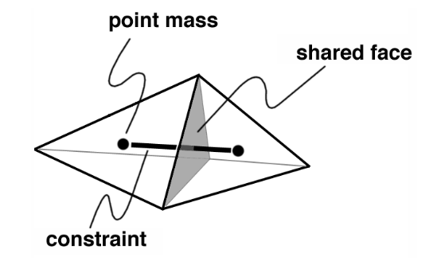
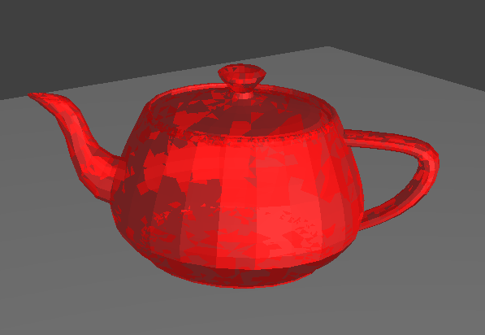
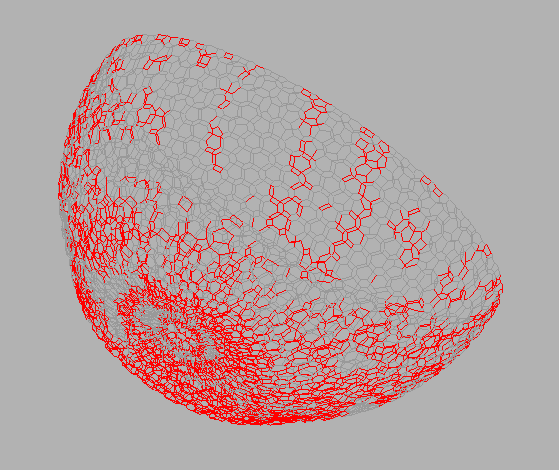
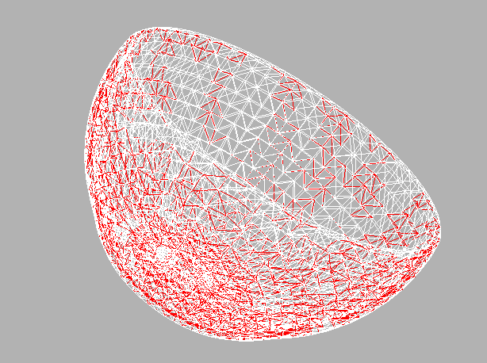
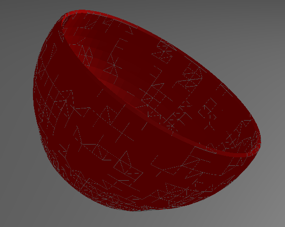
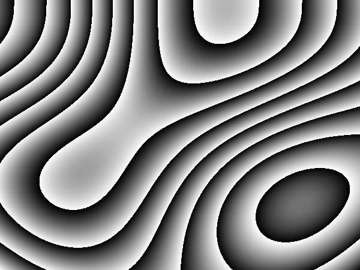
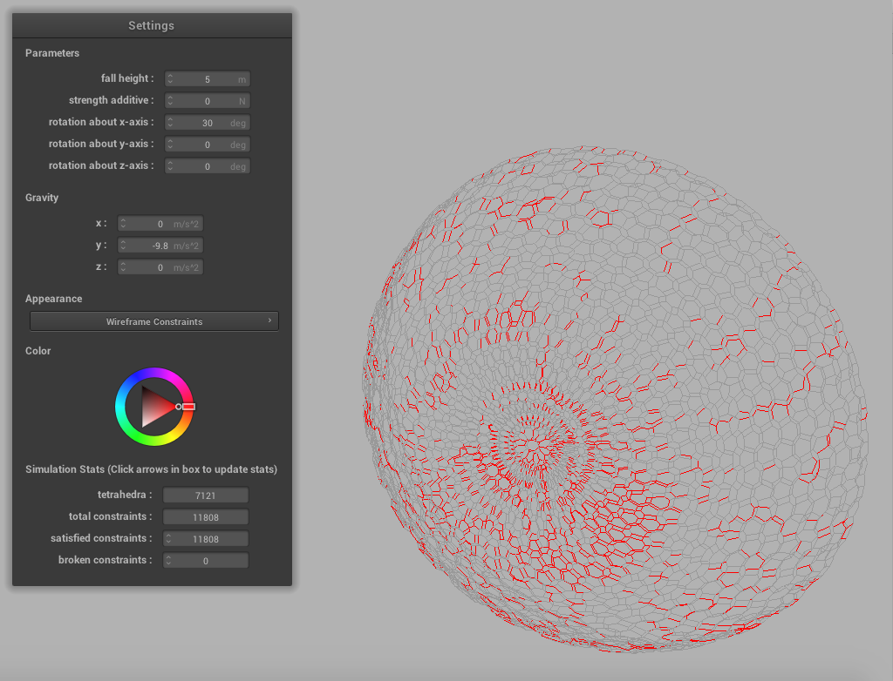
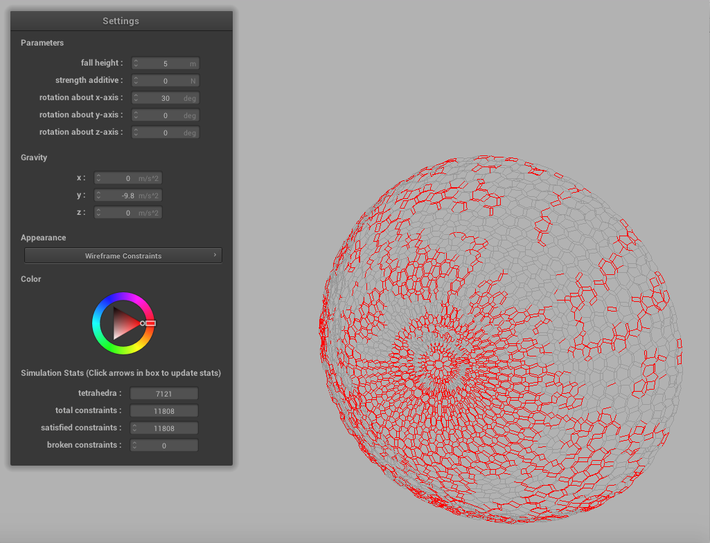

In this project we built a simulator for the fracturing of brittle objects, based off of the paper, Fast and Controllable Simulation of the Shattering of Brittle Objects. This report explains how to model the object, create useful visualizations, create constraint heuristics, implement the fracturing algorithm, and simulate the broken shards moving away from each other so that the shards are visible. The final result is a simulator capable of producing realistic fractures in an object when dropped from various heights and angles onto a plane.
 Our 3D object is modeled as a tetrahedron mesh. We generated these meshes using a tetrahedron generator we found online, called TetGen, after using an online program to covert dae files to ply files. Each tetrahedron is comprised of 4 triangles, 4 vertices, and 1 point mass at its center. A tetrahedron has a constraint with each neighboring tetrahedron (a tetrahedron it shares a face with) and these constraints connect the two tetrahedron’s point masses. Constraints have a strength, which we will go into more detail about below, and if enough force is applied to the constraint it will break, causing a fracture in the object.
 The original goal was to shatter the teapot, which was modeled as having a solid center. This created a challenge of visualizing what constraints were broken since a strong majority of constraints were on the inside of the mesh. The first approach was to use Blinn-Phong shading with 50% opacity for only surface trianges. However, this did not work as expected, as demonstrated by the image to the right.
This problem arises because the triangles in the mesh are in random order. Sometimes the behind triangle's color will be (improperly) taken first and then mixed with the front one's. The solution would be to sort the triangles every frame but this would be costly and greatly slow down rendering.
The solution we used was a wireframe approach. The first scheme is rendering the contraints: draw a line connecting the two point masses, where the point mass' location is the barycentric center of the tetrahedra. The line is white if the contraint is satisfied, and colored a dark red if it is broken. The second scheme is rendering the cracks: draw a wireframe of only the surface triangles in white. Draw in red (or the chosen color on the color wheel) the edges of the triangle of a broken constraint. This allows you to easily visualize cracks in a thick mesh, such as our teapot. The third scheme was using opaque Blinn-Phong with a white wireframe on broken constrain triangles, which allowed surface cracks to be visualized.
One challenge with using Blinn-Phong is computing the correct normal direction. Becuase the vertices and triangles are in essentially random order, naively computing the direction by using the given vertex ordering on the triangle will cause some normals to point away from the camera. The solution was to take the camera position into account, and make the normal point the direction that has a positive inner product with the camera position. This is not a perfect solution, but looks very reasonable on sphere-like meshes.
|

|

|

|
The user interface, allowed us to change simulation parameters, and get simulation statistics. There are options to change the fall height of the object, the rotation around any axis, and a constraint strength additive (to make all constraints stronger), and gravity in any direction. Each of the three visualization modes can be selected with the optional color. At the bottom are statistics on the total number of tetrahedra and constraints on the model. There are also numbers on the number of satisfied and broken constraints.
The UI can be seen in the videos on the Results section.
The set of constraints between pointmasses can be represented by the vector of constraint functions \(C\) of the form \(C_i(p_a, p_b) = \left\lVert p_a - p_b \right\rVert - d_i\), which is nonzero only if the constraint is broken (i.e. the distance between the pointmasses \(p_a, p_b\) are no longer at distance \(d_i\)). However, instead of using pointmass displacement as criteria for breaking the constraint, we give the constraint a maximum strength and calculate the force that the constraint must exert when impact occurs, and if the force is greater than its strength, it is broken.
Our heuristic for determining the strength of a constraint is based primarily on geometry in order for our results to be physically realistic. The strength of the constraint scales linearly with both the area of the shared triangle faced between the tetrahedra and the volumes of the two tetrahedra. The logic behind this is that the bigger the tetrahedra and the area of the surface that connects them, the less likely that surface is to crack. The geometric heuristic we ultimately went with is the following:
 Another heuristic was adding direction weakening via Perlin Noise. The coordinates of one of a constraint's tetrahedra is used to generate Perlin noise, and the decimal part is taken. This number (between 0 and 1) is multiplied by the above heuristic to get the final constraint value. This creates directional weakening as visualized to the right. In the image, the same concept is applied, but using the x and y pixel coordinates and multiplying a white RGB channel by the decimal part. We can see that it creates a wood-like structure that would clearly promote directional weakening in our case.
In order to promote crack propagation throughout the object, we weaken constraints adjacent to newly broken constraints. As the paper explains, it takes much less energy to lengthen an existing crack than it does to create a new crack, and therefore, when a constraint is broken, it's neighboring constraints should be weakened so that they may be more easily broken in the next iteration of the fracturing algorithm. Our constraints were weakened according to the following equation given in the paper, which is considered aggressive crack growth:
|

|

|
In the fracturing simulation, we are estimating if the constraint is broken by finding the reaction forces exerted by the pointmasses in response to the impact forces generated when the object hits the ground. We do this by solving
Here \(Q\) represents the impact force vector, \(W\) is the square matrix with elementwise inverse of each pointmass on the diagonals, and \(\lambda\) is our unknown. Upon solving for \(\lambda\), we can find the reaction force vector by finding $$\hat{Q} = J^T\lambda$$ At this point, it was unclear how the paper derived the forces exerted by the constraints from the vector \(\hat{Q}\) since it is a vector of forces acted on the pointmasses, not constraints. We found it suitable to derive the force exerted by the constraint by projecting the reaction forces of the two pointmasses onto the unit vector of \(p_a - p_b\). If the direction of the two forces both go outward we consider it a tensile force, and if the direction of the two forces both go inward we consider it a compressive force. The paper notes that brittle material are 8 times stronger under compressive forces compared to extension forces, which we incorporate into our criteria for breaking a constraint.
Solving the optimization problem is done by using a conjugate gradient descent solver provided in the Eigen library. We calculate a solution to the CGD equation between 50 - 100 iterations, depending on the size of the model. We vary the magnitude of the impact for \(Q\) every iteration using the function shown on the right. In the first 80% of our simulation, the impact force linearly grows from 0% to 100% and the in the final 20%, the impact forces linearly decreases back down to 0%.
This timed release of the impact force ensures that the reaction forces are only some \(\epsilon\) greater than constraint strength before the constraint is broken. The iterative approach also allows the forces to be "transmitted" throughout the object as we add the reaction forces \(\hat{Q}\) into the impact force \(Q\) for the next iteration to promote crack growth.
In order to better see how the object shattered, after shattering it we move each shard outward from the center of the plane so that each shard can be seen individually. After the fracturing algorithm is completed, we run depth first search on our mesh in order to group our tetrahedra into shards. We treat our tetrahedron mesh as a disconnected graph, and each run of DFS creates a new shard. For each neighbor of a tetrahedron, we add it to be traversed if the constraint between the tetrahedron and its neighbor is not broken. However, it is still possible for two neighboring tetrahdrons to be in the same shard even if the constraint between them is broken, because they may be connected via other tetrahedrons. In this case the fracture is just a crack and not a true break.
After each tetrahedron has been grouped into a shard, we compute the center of each shard by averaging the positions of the tetrahedrons' point masses. Then, the acceleration applied to "explode" the shard is the vector from the shard center to the center of the plane. We then use the same verlet integration function as falling to move the shards away from the center, where the external accelerations vector is just the exploding acceleration.
The major problem we faced in implementing this was dealing with the creation of new triangles and vertices for faces that had been cracked. In our original implementation, tetrahedrons that shared triangles and vertices all referenced the same objects, and when the shattering occurred, we tried to create new triangles and vertices so that these objects would no longer be shared between two or more tetrahedrons and they could be moved away from each other. This proved to be very difficult to correctly implement and debug, so instead when we create our tetrahedron mesh at the beginning of the simulation, each tetrahedron is comprised of its own triangles and vertices that are not shared with any other tetrahedron. This allows each tetrahedron to be easily separated from its neighbors because its vertices can be moved without affecting the location of its neighboring tetrahedra.
The videos switch between the 3 visualization options. The first is a wireframe showing constraints between tetrahedra. Broken constraints are shown in red. After the pieces are separated, only broken constraints between tetrahedra in the same piece are shown. The second visualization is a wireframe showing face tetrahedra. Internal broken tetrahedra are shown in red. The last visualization is the object rendered with Blinn-Phong shading. Internal broken tetrahedra are shown in grey in order to visualize the cracks.
The video below to the left shows a bowl rotated 30 degrees about the x-axis falling from a height of 5, and the video to its right shows the same bowl falling from a height of 20. As you can see below, when the bowl falls from a higher height, more cracks and shards appear because the impact force increases with the fall height.
The video below to the left shows a bowl rotated 145 degrees about the z-axis falling from a height of 5, and the video to its right shows the same bowl falling from a height of 20. Just as in the videos above, the bowl that falls from a higher height gets more cracks and shards.
|
|
|
In the first set of videos the bowl is rotated so that the impact point in the slightly angled bottom of the bowl, whereas the bowl is rotated so that the impact point is the lip of the bowl. As you can see, the results of shattering differ between the two angles. When the bowl is rotated 30 degrees, the majority of cracks start to form near the impact point at the bottom of the bowl, and as they propogate through the bowl, many small shards are formed all the way up the sides of the bowl. When the bowl is rotated 145 degrees, the majority of cracks form at the impact point on the lip of the bowl, with some cracks forming in other parts of the bowl, but a majority of the bowl remains a part of the same shard.
Fast and Controllable Simulation of the Shattering of Brittle Objects
Papers:
Graphics Libraries:
Nicole:
I created the initial foundation of our project by gutting the project 4 code, deleting unneeded files, altering the kept files,
and making everything build and compile. I also implemented the code for making the object fall to the plane by altering the
verlet integration code from project 4. I helped work on the heuristic for our constraint strengths and implemented the crack
growth that occurs at each iteration of our fracture algorithm. I created the ability for the object to be rotated about the
x, y, and z-axes and added these controls to the GUI. Along with Alex, I worked on getting the object to "explode" after
fracturing in order to better see the shards. I altered Alex's implementation of DFS to make it iterative, debugged the code,
and I reimplemented the way we generate our tetrahedron mesh so that the tetrahedra can be easily separated.
Alex:
I generated the models that were used by for the simulation by using TetGen program and worked on the parsing of the
files to create the in-memory data structures we used. Along with Derek, I worked on designing the data structures
that were used for the entire project. Finally, I spent a majority of the time working on the implement fracturing algorithm,
including calculating impact forces, building the matrices and vectors, running the CGD, and calculating constraint reaction forces.
I also did part of the explosion simulation by running a DFS algorithm to group all of the tetrahedron objects that
were still attached via unbroken constraints.
Derek:
I did a lot of work on the visualization aspect of this project. I came up with and implemented the two wireframe appearance
scehemes, and implemented the Blinn-Phong shading (with corrected normal directions) (minus the cracks shown on the surface,
Nicole did that!). I consolidated all the data structures for tetrahedra into one file, and did a little work on the main
simulate() loop. I imported open-source code for Perlin Noise, and used it on the constraint strengths as described above. I added
a fall height parameters to the UI and implemented it in the simulation side. I added the simulation statistics to the bottom of
the UI.